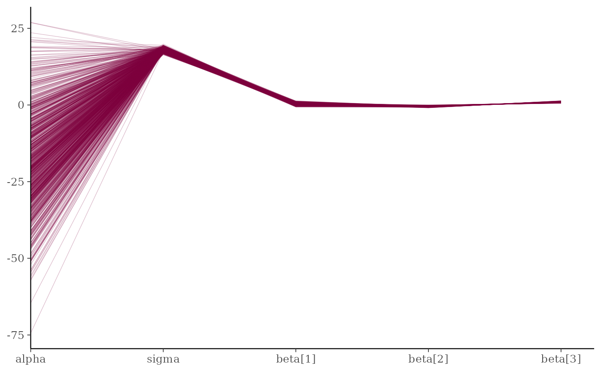
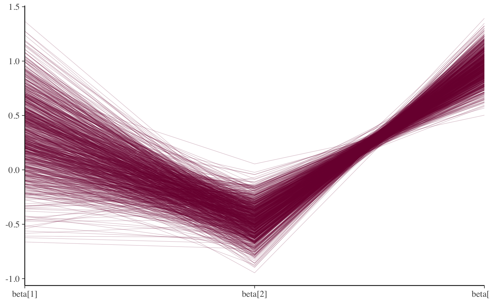

Parallel coordinates plot of MCMC draws (one dimension per parameter). See the Plot Descriptions section below for details, and see Gabry et al. (2019) for more background and a real example.
mcmc_parcoord( x, pars = character(), regex_pars = character(), transformations = list(), ..., size = 0.2, alpha = 0.3, np = NULL, np_style = parcoord_style_np() ) mcmc_parcoord_data( x, pars = character(), regex_pars = character(), transformations = list(), np = NULL ) parcoord_style_np(div_color = "red", div_size = 0.2, div_alpha = 0.2)
| x | A 3-D array, matrix, list of matrices, or data frame of MCMC draws.
The MCMC-overview page provides details on how to specify each these
allowed inputs. It is also possible to use an object with an
|
|---|---|
| pars | An optional character vector of parameter names. If neither
|
| regex_pars | An optional regular expression to use for
parameter selection. Can be specified instead of |
| transformations | Optionally, transformations to apply to parameters
before plotting. If Note: due to partial argument matching |
| ... | Currently ignored. |
| size, alpha | Arguments passed on to |
| np | For models fit using NUTS (more generally,
any symplectic integrator),
an optional data frame providing NUTS diagnostic information. The data
frame should be the object returned by |
| np_style | A call to the |
| div_color, div_size, div_alpha | Optional arguments to the
|
The plotting functions return a ggplot object that can be further
customized using the ggplot2 package. The functions with suffix
_data() return the data that would have been drawn by the plotting
function.
mcmc_parcoord()Parallel coordinates plot
of MCMC draws. There is one dimension per parameter along the horizontal
axis and each set of connected line segments represents a single MCMC draw
(i.e., a vector of length equal to the number of parameters).The parallel coordinates plot is most useful if the optional HMC/NUTS
diagnostic information is provided via the np argument. In that
case divergences are highlighted in the plot. The appearance of the
divergences can be customized using the np_style argument and the
parcoord_style_np helper function. This version of the plot is the
same as the parallel coordinates plot described in Gabry et al. (2019).When the plotted model parameters are on very different scales the
transformations argument can be useful. For example, to standardize
all variables before plotting you could use function (x - mean(x))/sd(x)
when specifying the transformations argument to
mcmc_parcoord. See the Examples section for how to do this.
Gabry, J. , Simpson, D. , Vehtari, A. , Betancourt, M. and Gelman, A. (2019), Visualization in Bayesian workflow. J. R. Stat. Soc. A, 182: 389-402. doi:10.1111/rssa.12378. (journal version, arXiv preprint, code on GitHub)
Hartikainen, A. (2017, Aug 23). Concentration of divergences (Msg 21). Message posted to The Stan Forums: https://discourse.mc-stan.org/t/concentration-of-divergences/1590/21.
Other MCMC:
MCMC-combos,
MCMC-diagnostics,
MCMC-distributions,
MCMC-intervals,
MCMC-nuts,
MCMC-overview,
MCMC-recover,
MCMC-scatterplots,
MCMC-traces
mcmc_parcoord(x, regex_pars = "beta")#>#>#> #> #> #>#> Warning: URL 'https://codeload.github.com/stan-dev/example-models/zip/master': Timeout of 60 seconds was reached#> Error in download.file(URL, FILE): download from 'https://github.com/stan-dev/example-models/archive/master.zip' failed#> Download of example-models failed. Try unziping #> https://github.com/stan-dev/example-models/archive/master.zip #> in /var/folders/h6/14xy_35x4wd2tz542dn0qhtc0000gn/T//RtmpjQRDJk#> Error in as.array(fit, pars = c("mu", "tau", "theta", "lp__")): object 'fit' not found#> Error in nuts_params(fit): object 'fit' not foundstr(np)#> Error in str(np): object 'np' not found#> Error in levels(np$Parameter): object 'np' not found#> Error in is.data.frame(x): object 'draws' not foundmcmc_parcoord(draws, np = np)#> Error in is.data.frame(x): object 'draws' not found# customize appearance of divergences color_scheme_set("darkgray") div_style <- parcoord_style_np(div_color = "green", div_size = 0.05, div_alpha = 0.4) mcmc_parcoord(draws, size = 0.25, alpha = 0.1, np = np, np_style = div_style)#> Error in is.data.frame(x): object 'draws' not found# to use a transformation (e.g., standardizing all the variables can be helpful) # specify the 'transformations' argument (though partial argument name # matching means we can just use 'trans' or 'transform') mcmc_parcoord( draws, transform = function(x) {(x - mean(x)) / sd(x)}, size = 0.25, alpha = 0.1, np = np, np_style = div_style )#> Error in is.data.frame(x): object 'draws' not found# mcmc_parcoord_data returns just the data in a conventient form for plotting d <- mcmc_parcoord_data(x, np = np)#> Error in mcmc_parcoord_data(x, np = np): object 'np' not foundhead(d)#> Error in head(d): object 'd' not foundtail(d)#> Error in tail(d): object 'd' not found# }